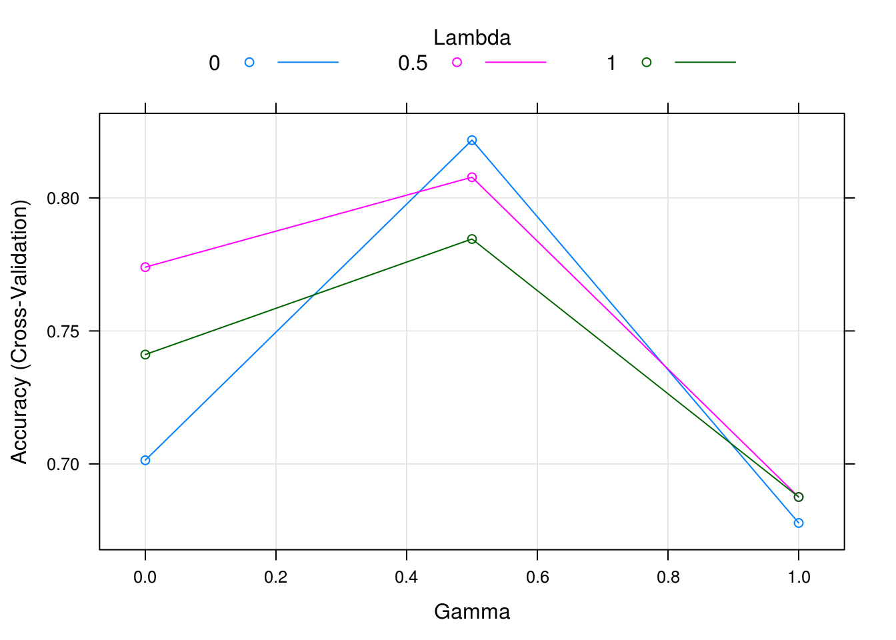
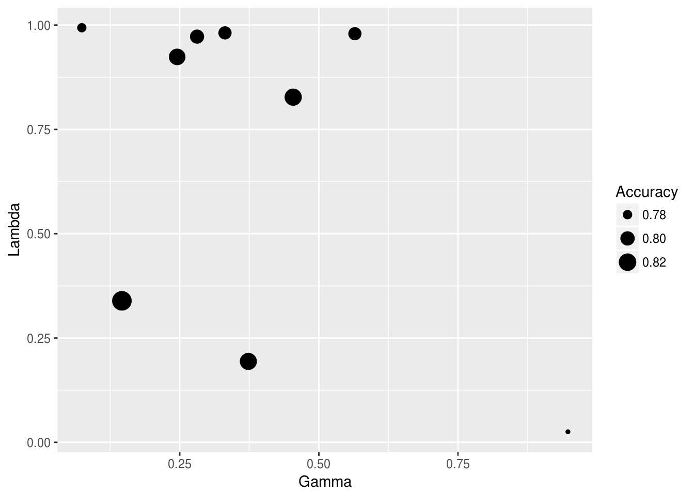

Chapter 31 Regularized Discriminant Analysis
We now use the Sonar dataset from the mlbench package to explore a new regularization method, regularized discriminant analysis (RDA), which combines the LDA and QDA. This is similar to how elastic net combines the ridge and lasso.
31.1 Sonar Data
# this is a temporary workaround for an issue with glmnet, Matrix, and R version 3.3.3
# see here: http://stackoverflow.com/questions/43282720/r-error-in-validobject-object-when-running-as-script-but-not-in-console
library(methods)##
## M R
## 0.5336538 0.4663462## [1] 6031.2 RDA
Regularized discriminant analysis uses the same general setup as LDA and QDA but estimates the covariance in a new way, which combines the covariance of QDA \((\hat{\Sigma}_k)\) with the covariance of LDA \((\hat{\Sigma})\) using a tuning parameter \(\lambda\).
\[ \hat{\Sigma}_k(\lambda) = (1-\lambda)\hat{\Sigma}_k + \lambda \hat{\Sigma} \]
Using the rda() function from the klaR package, which caret utilizes, makes an additional modification to the covariance matrix, which also has a tuning parameter \(\gamma\).
\[ \hat{\Sigma}_k(\lambda,\gamma) = (1 -\gamma) \hat{\Sigma}_k(\lambda) + \gamma \frac{1}{p} \text{tr}(\hat{\Sigma}_k(\lambda)) I \]
Both \(\gamma\) and \(\lambda\) can be thought of as mixing parameters, as they both take values between 0 and 1. For the four extremes of \(\gamma\) and \(\lambda\), the covariance structure reduces to special cases:
- \((\gamma=0, \lambda=0)\): QDA - individual covariance for each group.
- \((\gamma=0, \lambda=1)\): LDA - a common covariance matrix.
- \((\gamma=1, \lambda=0)\): Conditional independent variables - similar to Naive Bayes, but variable variances within group (main diagonal elements) are all equal.
- \((\gamma=1, \lambda=1)\): Classification using euclidean distance - as in previous case, but variances are the same for all groups. Objects are assigned to group with nearest mean.
31.3 RDA with Grid Search
set.seed(1337)
fit_rda_grid = train(Class ~ ., data = Sonar, method = "rda", trControl = cv_5_grid)
fit_rda_grid## Regularized Discriminant Analysis
##
## 208 samples
## 60 predictor
## 2 classes: 'M', 'R'
##
## No pre-processing
## Resampling: Cross-Validated (5 fold)
## Summary of sample sizes: 167, 166, 166, 167, 166
## Resampling results across tuning parameters:
##
## gamma lambda Accuracy Kappa
## 0.0 0.0 0.6977933 0.3791172
## 0.0 0.5 0.7644599 0.5259800
## 0.0 1.0 0.7310105 0.4577198
## 0.5 0.0 0.7885017 0.5730052
## 0.5 0.5 0.8271777 0.6502693
## 0.5 1.0 0.7988386 0.5939209
## 1.0 0.0 0.6732869 0.3418352
## 1.0 0.5 0.6780488 0.3527778
## 1.0 1.0 0.6825784 0.3631626
##
## Accuracy was used to select the optimal model using the largest value.
## The final values used for the model were gamma = 0.5 and lambda = 0.5.
31.4 RDA with Random Search Search
fit_rda_rand = train(Class ~ ., data = Sonar, method = "rda",
trControl = cv_5_rand, tuneLength = 9)
fit_rda_rand## Regularized Discriminant Analysis
##
## 208 samples
## 60 predictor
## 2 classes: 'M', 'R'
##
## No pre-processing
## Resampling: Cross-Validated (5 fold)
## Summary of sample sizes: 167, 166, 166, 167, 166
## Resampling results across tuning parameters:
##
## gamma lambda Accuracy Kappa
## 0.07399023 0.99371759 0.7795587 0.5556383
## 0.14604362 0.33913968 0.8508711 0.6996434
## 0.24540405 0.92379666 0.8418118 0.6798190
## 0.28111731 0.97238848 0.8226481 0.6405093
## 0.33131745 0.98132543 0.8083624 0.6123279
## 0.37327926 0.19398230 0.7981417 0.5930526
## 0.45386562 0.82735873 0.8272938 0.6501074
## 0.94763002 0.02522857 0.7742160 0.5399326
## 0.97943029 0.24657940 0.7454123 0.4839854
##
## Accuracy was used to select the optimal model using the largest value.
## The final values used for the model were gamma = 0.1460436 and lambda
## = 0.3391397.
31.5 Comparison to Elastic Net
31.6 Results
get_best_result = function(caret_fit) {
best_result = caret_fit$results[as.numeric(rownames(caret_fit$bestTune)), ]
rownames(best_result) = NULL
best_result
}| gamma | lambda | Accuracy | Kappa | AccuracySD | KappaSD |
|---|---|---|---|---|---|
| 0.5000000 | 0.5000000 | 0.8271777 | 0.6502693 | 0.0970937 | 0.1962078 |
| 0.1460436 | 0.3391397 | 0.8508711 | 0.6996434 | 0.0887983 | 0.1797382 |
| alpha | lambda | Accuracy | Kappa | AccuracySD | KappaSD |
|---|---|---|---|---|---|
| 0.1 | 0.0350306 | 0.8271777 | 0.6501991 | 0.0416190 | 0.0881929 |
| 0.1 | 0.0561881 | 0.8364692 | 0.6687824 | 0.0751608 | 0.1540228 |
31.7 External Links
- Random Search for Hyper-Parameter Optimization - Paper justifying random tuning parameter search.
- Random Hyperparameter Search - Details on random tuning parameter search in
caret.
31.8 RMarkdown
The RMarkdown file for this chapter can be found here. The file was created using R version 4.0.2 and the following packages:
- Base Packages, Attached
## [1] "stats" "graphics" "grDevices" "utils" "datasets" "methods"
## [7] "base"- Additional Packages, Attached
## [1] "klaR" "MASS" "glmnet" "Matrix" "caret" "ggplot2" "lattice"
## [8] "mlbench"- Additional Packages, Not Attached
## [1] "splines" "foreach" "prodlim" "shiny" "highr"
## [6] "stats4" "yaml" "ipred" "pillar" "glue"
## [11] "pROC" "digest" "promises" "colorspace" "recipes"
## [16] "htmltools" "httpuv" "plyr" "timeDate" "pkgconfig"
## [21] "labelled" "haven" "questionr" "bookdown" "purrr"
## [26] "xtable" "scales" "later" "gower" "lava"
## [31] "tibble" "combinat" "generics" "farver" "ellipsis"
## [36] "withr" "nnet" "survival" "magrittr" "crayon"
## [41] "mime" "evaluate" "nlme" "forcats" "class"
## [46] "tools" "data.table" "hms" "lifecycle" "stringr"
## [51] "munsell" "compiler" "e1071" "rlang" "grid"
## [56] "iterators" "rstudioapi" "miniUI" "labeling" "rmarkdown"
## [61] "gtable" "ModelMetrics" "codetools" "reshape2" "R6"
## [66] "lubridate" "knitr" "dplyr" "fastmap" "shape"
## [71] "stringi" "Rcpp" "vctrs" "rpart" "tidyselect"
## [76] "xfun"